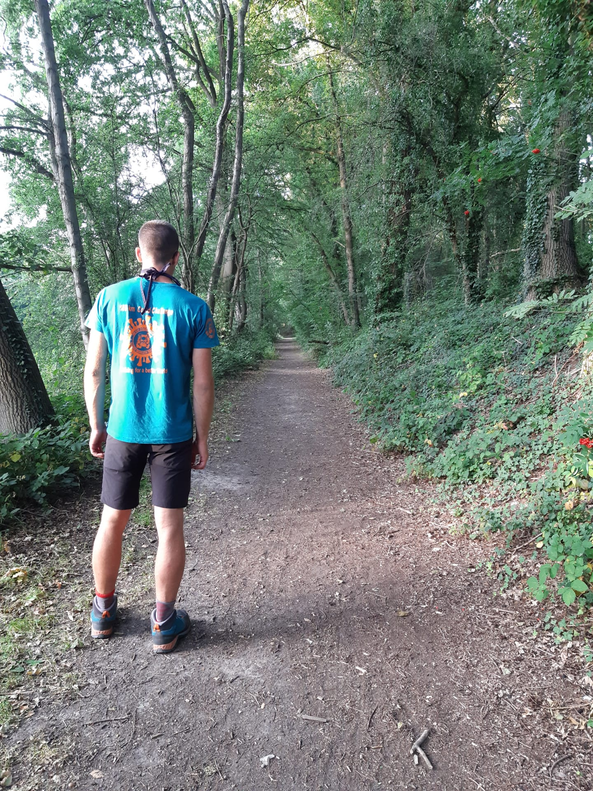

Wandelen
Mijn passie voor wandelen is begonnen in 2017, namelijk in de zomer van 2017.
Elk jaar in de zomer rond de 10e augustus vind de internationale dodentocht plaats. Ik was toen mee verzorger van een wandelaar
die deelnam, en dus pendelde ik mee met een volgwagen langs het parcours en het was zo boeiend dat ik de dodentocht zelf ook wou wandelen samen met al die andere duizenden deelnemers.
Dus diezelfde september dat volgde begon ik met trainen en deed ik vervolgens mijn eerste maal de dodentocht mee in 2018, ik was toen 17 en het was de 49e editie van de dodentocht. Jammer maar helaas heb ik hem tot in de helft kunnen afwerken
door last aan de spieren en vermoeidheid.
Niet getreurd, volgend jaar opnieuw? Exact! Het jaar erna (2019) stonden we terug aan de start van de 50e editie op 18 jarige leeftijd. En jawel deze keer de volle 100 km in de benen tot aan de finish!
Sindsdien ben ik blijven wandelen en zijn er 2 edities van de internationale dodentocht niet kunnen doorgaan vanwege de coronacrisis.
Ondertussen 3 jaar later en goed getrainde benen zijn we er terug klaar voor! Op naar 12 augustus voor de 53e editie van de internationale dodentocht.
